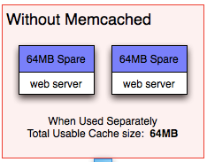

为什么要使用MemCache？
小课堂
分享人: 韦杰
目录
1.背景介绍
2.知识剖析
3.常见问题
4.解决方案
5.编码实战
6.扩展思考
7.参考文献
8.更多讨论
1.背景介绍
为什么要使用缓存?
在项目开发汇总，web项目的前后端是分离开发的。应用程序的开发，需要由前后端工程师共同定义接口，编写接口文档，之后大家都根据这个接口文档进行开发，到项目结束前都要一直维护。
使用memcache作为缓存又有什么优点？
1、使用memcache之前，每个服务器的缓存是分开的，总的容量等于单个服务器的缓存容量，还要分出精力去维护所有服务器上缓存的数据，让它们保存一致。
2、使用memcache之后：把每一个使用了缓存的服务器称作节点，memcache则是把这些节点组成一个节点池。
1）容量增大，总的容量是所有服务器缓存容量的总和。
2）一个指定的数据的将在同一个节点上进行读写，不需要保持节点间的数据一致

2.知识剖析
memcache到底是什么？
MemCache是一个自由、源码开放、高性能、分布式的分布式内存对象缓存系统，用于动态Web应用以减轻数据库的负载。它通过在内存中缓存数据和对象来减少读取数据库的次数，从而提高了网站访问的速度。 MemCaChe是一个存储键值对的HashMap，在内存中对任意的数据（比如字符串、对象等）所使用的key-value存储。
memcache的访问模型

看图说话
1）可以在同一个服务器上分出多个端口作为一个memcached节点
2）图中分为应用程序服务器和memcache服务器，也就是说，我们可以专门准备一个服务器，不装应用程序，只作为memcache服务器使用。
3）理一下MemCache一次写缓存的过程
A）service方法里传入需要写缓存的数据并规定key==》
B）客户端将key传到内部的路由算法模块==》
C）得到key对应HashCode==》
D）路由算法根据Key和Memcache几圈服务器列表得到一台服务器编号==》
E）由服务器编号得到MemCache的IP地址和端口号==》
F）客户端调用通信模块和指定编号的服务器通信，将数据写入该服务器。
4）MemCache的一次读缓存的过程
读缓存跟写缓存的步骤差不多。
MemCache的路由算法
1.余数Hash算法
2.一致性Hash算法
1.余数Hash算法
1）原理
假设key对应的HashCode是50，memcache服务器数目为3，取余数2，那么这个key对应节点node2。
2）优点
算法简单，能满足绝大多数的缓存路由需求。
3）缺点
扩容会导致get命中率大幅度下降。

4）解决方案
A.在网站访问量低估，通常是深夜，你加班，扩容，重启服务器
B.你再加班，通过模拟请求的方式逐渐预热缓存，使服务器中的数据重新分布
2.一致性Hash算法
1）原理
先构造一个长度为232的证书换（这个环被称为一致性Hash环），根据节点名称的Hash值（值的分布范围为[0,232-1]）把MemCache服务器节点放在这个Hsah环上，接着根据需要缓存的数据的Key对应的Hash值（值的分布范围也是[0,232-1]），然后在Hash环上顺时针查找距离这Key的Hash值最近的服务器节点，完成一次写操作。

2）优点
扩容方便,get命中率下降的不是很厉害。而且，节点数越多，每次扩容后get命中率下降越小。也就是说，你不用熬夜加班扩容、预热缓存。也就是说，你没有加班费了。

MemCache实现原理
首先要理解下面的一些概念：
1）MemCache的数据是存放在内存中的；
2）这里面涉及4个概念：slab_class，slab，page，chunk
3）MemCache将内存分为一组slab，每个slab下又有若干个page，每个page大小都是固定的1M；
4）每个page里面包含一组chunk，chunk是真正存放数据的地方，同一个slab里面的chunk大小是固定的；
5）有相同大小chunk的slb被组织在一起，被称为slab_class。

详细的过程：
1）MemCache中的value过来存放的地方是由value的大小决定的，value总是会被存放到与chunk大小最接近的一个slab中;
2）比如slab[1]的chunk大小为80字节、slab[2]的chunk大小为100字节、slab[3]的chunk大小为128字节（相邻slab内的chunk基本以1.25为比例进行增长，MemCache启动时可以用-f指定这个比例），那么过来一个88字节的value，这个value将被放到2号slab中；
3）放slab的时候，首先slab要申请内存，申请内存是以page为单位的，所以在放入第一个数据的时候，无论大小为多少，都会有1M大小的page被分配给该slab；
4）申请到page后，slab会将这个page的内存按chunk的大小进行切分，这样就变成了一个chunk数组，最后从这个chunk数组中选择一个用于存储数据。
memcache常用命令
1.安装命令
memcache依赖于libevent，要先安装libevent才能安装memcache

2.启动命令

3.查看命令
stats 返回MemCache通用统计信息
stats items 返回哥哥slab中item的数目和最老的item的年龄（最后一次访问举例现在的秒数）
statsslabs 返回MemCache运行期间创建的每个slab的信息
3.常见问题
1）memcache和memcached的区别？
2）memcache无可用连接？
4.解决方案
1）memcache是项目的名称，memcached是memcache服务器端可执行文件的名称。
2）解决思路
A.确认服务器上的memcached服务有没有打开==》服务器用telnet看能不能连上memcached
B.本地用telnet连接服务器的memcached
C.重启服务器
5.代码实战
6.拓展思考
缓存到底是什么？
1）许多人认为，“缓存”是内存的一部分。许多技术文章都是这样教授的，但是还是有很多人不知道缓存在什么地方，缓存是做什么用的？其实，缓存是CPU的一部分，它存在于CPU中。
2）CPU存取数据的速度非常的快，一秒钟能够存取、处理十亿条指令和数据（术语：CPU主频1G），而内存就慢很多，快的内存能够达到几十兆就不错了，可见两者的速度差异是多么的大 .
3）缓存是为了解决CPU速度和内存速度的速度差异问题。内存中被CPU访问最频繁的数据和指令被复制入CPU中的缓存，这样CPU就可以不经常到象“蜗牛”一样慢的内存中去取数据了，CPU只要到缓存中去取就行了，而缓存的速度要比内存快很多 。
关于一级缓存和二级缓存
1）为了分清这两个概念，我们先了解一下RAM。RAM和ROM相对的，RAM是掉电以后，其中才信息就消失那一种，ROM在掉电以后信息也不会消失那一种。
2）RAM又分两种，一种是静态RAM，SRAM；一种是动态RAM，DRAM。前者的存储速度要比后者快得多，我们现在使用的内存一般都是动态RAM。
3）缓存通常都是静态RAM，速度是非常的快，但是静态RAM集成度低（存储相同的数据，静态RAM的体积是动态RAM的6倍），价格高（同容量的静态RAM是动态RAM的四倍）。
4）由此可见，扩大静态RAM作为缓存是一个非常愚蠢的行为，由此可见，扩大静态RAM作为缓存是一个非常愚蠢的行为，这样就有了一个折中的方法，不扩大原来的静态RAM缓存，而是增加一些高速动态RAM做为缓存。
5）这些高速动态RAM速度要比常规动态RAM快，但比原来的静态RAM缓存慢，我们把原来的静态ram缓存叫一级缓存，而把后来增加的动态RAM叫二级缓存。
6）一级缓存和二级缓存中的内容都是内存中访问频率高的数据的复制品（映射），它们的存在都是为了减少高速CPU对慢速内存的访问。通常CPU找数据或指令的顺序是：先到一级缓存中找，找不到再到二级缓存中找，找不到再到内存中找了，再找不到就要去硬盘找了。
7.参考文献
参考1：MemCache官网
参考2：MemCache超详细解读
8.更多讨论
鸣谢
感谢大家观看
BY : 韦杰